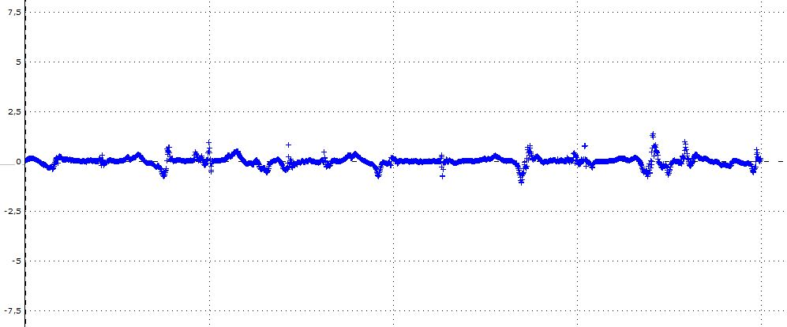
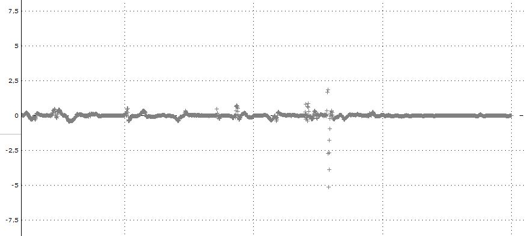

Centrale Latis :

Du scotch :

et Bilal :

“La piézoélectricité est la propriété que possèdent certains corps de se polariser électriquement sous l’action d’une contrainte mécanique et réciproquement de se déformer lorsqu’on leur applique un champ électrique”.
Nous cherchons à calculer l'énergie que nous pouvons produire à l'aide de cellules piezoélectriques.
Nous allons "scotcher" une cellule piezoélectrique en dessous de la semelle de Bilal et mesurer le voltage produit par une marche de 10 secondes. Nous allons donc utiliser le logiciel Latis Pro afin de mesurer le voltage et de tracer des graphiques. De plus nous allons déterminer quelle est la zone du pied la plus intéressante pour placer la cellule.
Cellule piezoélectrique :
Centrale Latis :
Du scotch :
et Bilal :
Voici le graphique de la tension en fonction du temps lorsque Bilal marche avec la cellule collée sous l'avant de sa chaussure :

On peut observer que l'on atteint tout juste 1V au maximum à chaque pas.
Voici le graphique de la tension en fonction du temps lorsque Bilal marche avec la cellule collée sous le milieu de sa chaussure :

Cette fois-ci, on atteint 3V au maximum à chaque pas, le milieu du pied est donc bien plus aproprié afin de placer une cellule.
Sous le talon :

Sous le talon, le voltage est légèrement plus faible, on atteint 2V à chaque pas.
Ensuite, nous avons décidé de tester une cellule dans la chaussure :

Le résultat est très décevant, on atteint à peine 1V
Nous pouvons conclure alors que la piezo électricité permet de produire un voltage plutôt élevé, nous allons donc continuer les expériences afin de mesurer l'intensité quand la cellule est placée au milieu du pied. Grâce à ces résultats, nous pourrons calculer la puissance générée par la cellule piézo-électrique
Nous allons brancher la cellule piezo-électrique en série avec une résistance de 10Ω (c'est le plus petit que nous avons) et en dérivation avec la centrale Latis. Nous allons donc mesurer un voltage et nous pourrons en déduire une intensité.
Cellule piezoélectrique :
Centrale Latis :
Ampèremètre :
Du scotch :
et Bilal :
Après avoir fait le montage, Bilal a commencé à marcher pour faire l'expérience mais la centrale Latis restait déséspéremment à 0. Il s'avère que l'intensité est si faible que même avec une petite résistance de 10Ω, elle ne soit pas calculable de la tension. Nous allons donc chercher une formule qui nous permettra de calculer une intensité.
Nous avons trouvé une formule permettant de calculer la charge électrique générée par une cellule piézo-électrique pour une pression donnée sur un matériau donné. Elle s'écrit Q = d33x F où d33 est le coefficient de piezo-électricité propre au matériau de la cellule et F la force appliquée, aussi appelée pression ou même stress. Nous l'avons trouvée sur le site American Piezo
Nous allons prendre un poids de référence que nous exprimerons en N. Ce poid sera appliqué à la surface de la cellule, ce qui nous donnera la pression. La cellule étant en quartz, nous connaissons d33. La charge électrique sera donc proportionnelle au poids car la surface et le coefficient sont constants.
On a F la pression appliquée par Bilal à chaque pas (la moitié de son poid) sur la surface de la cellule, d33 le coefficient piezoélectrique qui dépend du matériau de la cellule (ici du quartz) et Q la charge électrique générée par la contrainte mécanique.
Or comme nous l'ont appris les documents scientifiques (allez voir la bibliographie pour plus d'informations) :
Q = d33 x F
On sait que F = 196.2N/2.8x10-15m2 et d33 = 2.33x10-12
Par conséquent, dans le cas de Bilal, la charge en Coulombs générée par Bilal à chaque pas est de 1.456x10-6C
Or 1C = 1000mAs donc Bilal génère 1.456x10-3mAs ce qui nous fait donc à peu près 5mAh.
Ce résultat
est absolument insignifiant, rendant l'utilisation de la piezo-électricité pour alimenter des objets connectés totalement inefficace
Nous avons vu grace à nos expériences que l'on peut en effet produire de l'énergie grâce à des cellules piezoélectriques. Cependant, elles sont trop peu efficaces afin d'être utilisées dans le cadre d'un usage personnel. Nous pouvons cependant envisager
l'utilisation de capacitors afin d'accumuler de l'énergie pour alimenter de manière ponctuelle un objet connecté.
Pour aller plus loin, nous pourrions envisager des routes ou même un sol très féquenté bardé de cellules piezoélectriques. La contrainte
mécanique d'une foule ou de plusieures voitures serait suffisante afin d'alimenter des objets connectés ou même pour alimenter l'éclairage public.
Le principe est de placer une plaque possédant plein de cellules piezoélectriques en dessous afin de produire de l'énergie lorsque quelqu'un marche dessus. Pour maximiser son rendement, il faudrait la placer dans un passage très fréquenté. Les cellules piezoélectriques ont un rendement bien trop faible pour un usage personnel ou pour un simple objet connecté dans une maison. Cependant, il peut être utilisé par la ville pour alimenter quelques services à l'aide des plaques que nous vous avons présentées. Cela pourrait aussi servir à une entreprise (assez grande) ou même à un établissement, du moment qu'un passage est bien fréquenté pour que la plaque produise un bon rendement.